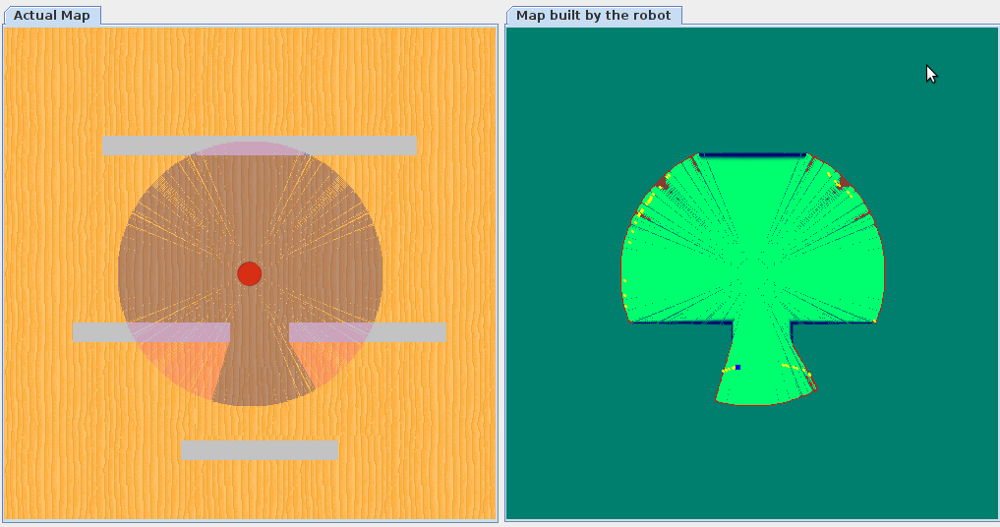
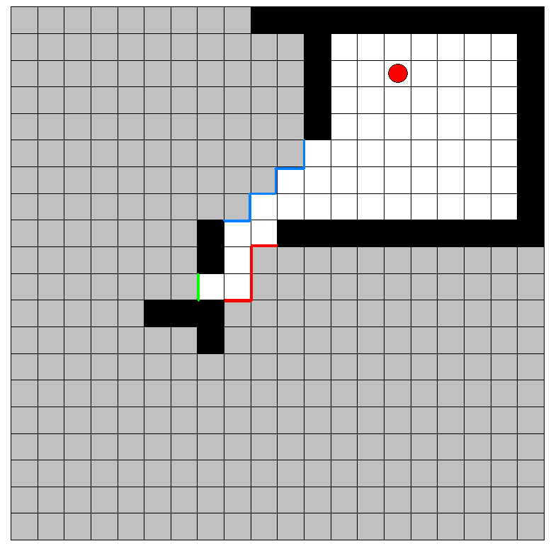
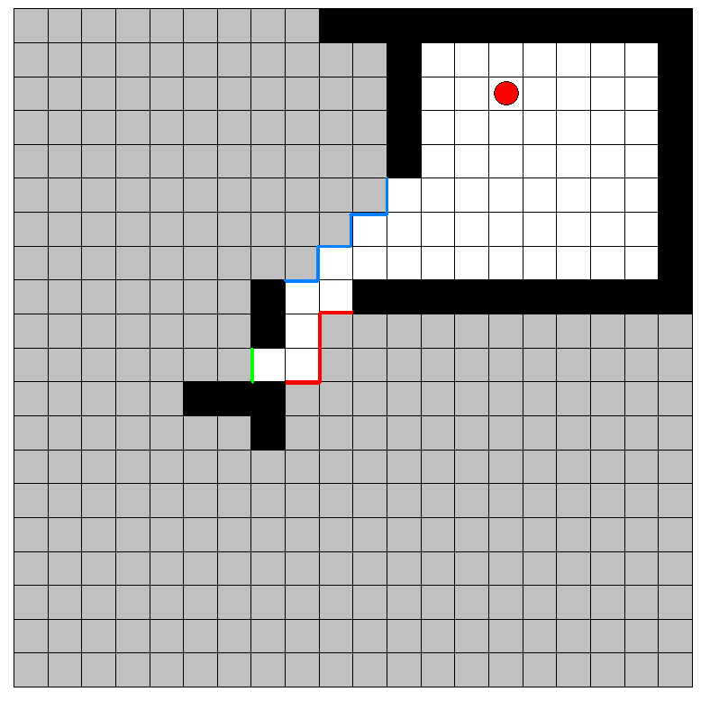
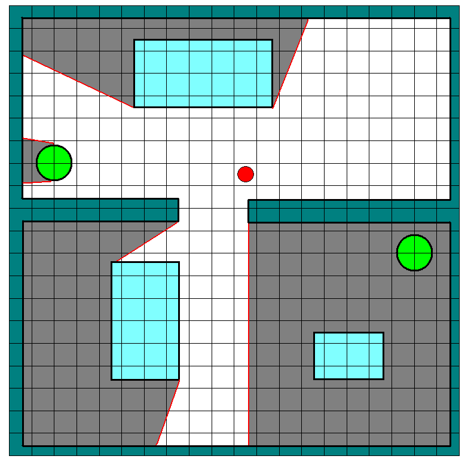
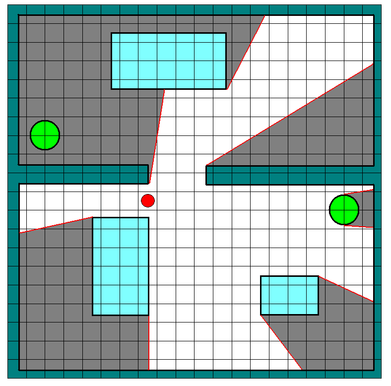
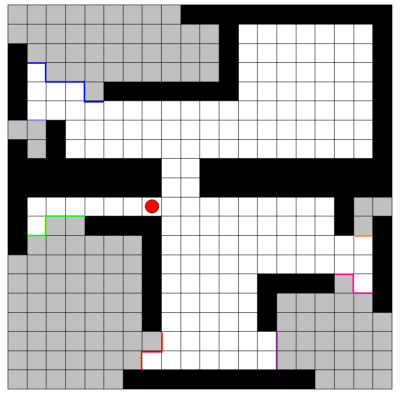
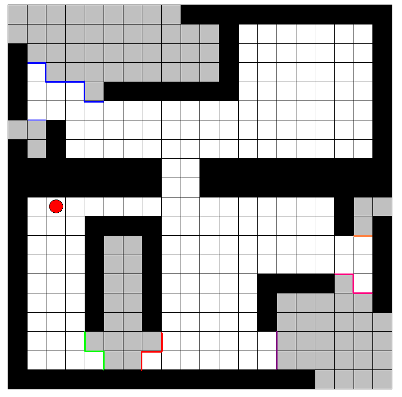
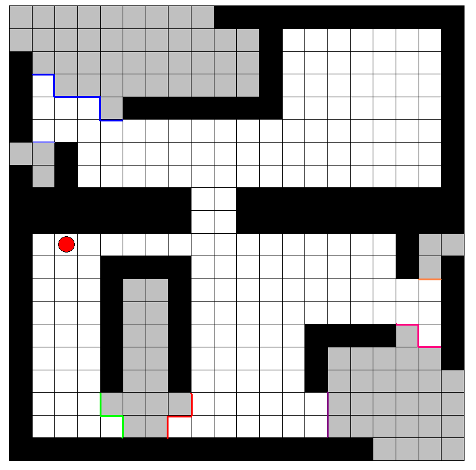
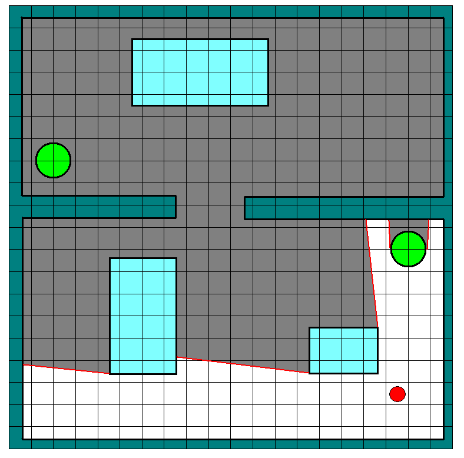
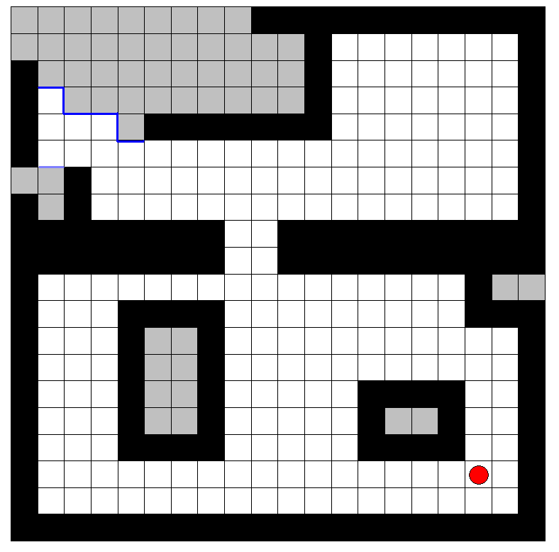

Computer Science & Engineering Mobile RoboticsList Of Experiments
Exploration
Frontier based exploration involves the following stages:
- Scanning the environment with 360 sensor sweep.
- Detect frontiers.
- Cluster the frontiers and get cluster centers (Centroids).
- Move towards the closest centroid.
- Follow the steps 1 to 4 till all accessible frontiers have been visited.
Note: It is recommended to go through the Sensor modeling and Mapping experiments before going forward.
These steps are explained in detail
Step 1: Scanning the environment:
This is done by using laser scan sweeping across 360 degrees. As described in the Experiments Sensor modeling and Mapping, the grid cells or the pixels are updated with their probability of occupancy values after each scan. With this single scan, complete environment is not explored. Hence the robot has to move to another location and do the scanning again (as given in Mapping). This has to be done continously till the complete arena is explored. But after every scan, the robot has to decide where to move. This decision is made using frontier based approach.
What is frontier?
Frontier is the boundary between the open space and unexplored region as pointed out in the below figure. The cells/pixels colored red in the below image of the tab "Map built by robot" are the frontiers.
As in some of the experiments of this lab (Sensor Modelling and Mapping), the left tab of the applet represents the real environment with robot in red color and laser as its sensor. Similarly the right tab is the grid map of cells which are updated with the values of probability of occupancy during the experiment.

Step 2: Detect frontiers:
pen space is where the probability of occupancy is 0 and the unexplored region is where the probability of occupancy is 0.5. Select the cells/pixels that are of these two classes and adjacent to each other to get the frontiers. There are many heuristic ways to do this selection of frontiers. Here the selection is done based on the characteristics of the adjacent grid cells. Now we have a set of frontiers (regions) towards which the robot can move. Depending on the environment, the number of frontiers will vary. Since this step will be followed many times during the exploration, the frontiers (regions) may not be of a definite shape. Above figure has frontiers in red colored cells/pixels. Check the Mapping experiment which shows how the map builds subsequently after every scan. Hence these frontiers (regions) have to be represented as different clusters to choose the best location of the robot to do the next scan.
Step 3: Cluster the frontiers:
Clustering is a mechanism of grouping objects based on their characteristics. Here the objects being clustered are the cells/pixels in the frontiers. There are many clustering mechanisms that can be used. In this experiment a simple distance recursive algorithm is used. One can notice that at the end of the clustering, the number of clusters are not same as it would be inferred by humans visually (which is 3 as observed from the above figure). They are much larger in general. Centroids can be grouped into 3 different categories, like visible, invisible and unreachable. Visible centroids are the ones where the robot can go directly, as the space between them is free from obstacles. Invisible centroids are the ones which have obstacles detected between them and a path planning has to be done in order to reach them. Unreachable centroids are the ones that fall very near to the obstacle and the dimensions of the robot doesn't allow them to reach there. Centroids of the clusters are shown in the above figure with yellow in color. Now the best location for the robot to get more information about the environment quickly is to move towards/to the nearest visible/invisible centroid. The nearest centroid after a scan is given by dark blue color as in the above figure. When the nearest visible centroid is not available in the map anymore, then the nearest invisible centroid is considered as the next location to reach.
Moving towards the closest centroid is same as moving towards the closest frontier. This involves path planning from the current location to the closest centroid. Path planning is required because the direct path between the start location and goal location is not always visible. There are many path planning algorithms available to do this task. Some of which is are available in the previous experiments like Grid based navigation and RRT based path planning of this virtual lab. In this experiment this part of path planning is not integrated so as to give the user the insight of how the steps 1-3 take place. So robot moves towards the closest centroid when the user makes the robot to move to the next location. It may be observed in the applet that after exploring most part of the map, the robot might jump from a location to the closest frontier abruptly. This is because the path planning is not integrated in this experiment.
Step 5: Repetition of steps 1-4:

All the steps are followed until the frontiers become close to zero. This condition can be applied on the number of centroids in turn. In the experiment we have a number close to zero as the threshold to stop the exploration.
The above figure gives the map after 1-3 steps where the next location to which the robot has to move is given in dark blue color. So if the robot moves to next location and follow all the steps, the exploration would be in a stage as shown in the below figure.
The frontier based exploration is explained below in a graphical way with the map layout and the grid map being build.
Below is the layout of the map that we are going to explore. Robot is represented by the red circle.

Scan 1. Below are the map layout(left) and its corresponding grid map being built (right). At the end of the scan the pixels in the grid map are updated with probability of occupancy as discussed earlier and frontiers are detected. Frontiers are represented by blue green and red boundaries below. Out of these three boundaries frontier in blue is the closest one. Hence the robot moves to the blue frontier.
 

Scan 2. Below is the map built after scanning at the new location. After this can again the frontiers are detected and are colored by blue, green, red and sky blue colors. The nearest frontier for the robot to move is the one in green color.

Scan 3. Below is the map built after scanning at the new location. We again get the frontiers and choose the closest one which is green in color.

Scan 4. Below is the map built after scanning at the new location. We again get the frontiers and choose the closest one which is green in color.
 

Scan 5. Below is the map built after scanning at the new location. We again get the frontiers and choose the closest one which is green in color.


Scan 6. Below is the map built after scanning at the new location. We again get the frontiers and choose the closest one which is blue in color. Observe that this situation tells how important is the path planning to move the robot from this location to the next location which is very far and encounters many obstacles on the way.

Scan 7. Below is the map built after scanning at the new location. After this scan we find no frontiers in the grid map to move and explore.


Exploration is complete. All unknown frontiers are explored.